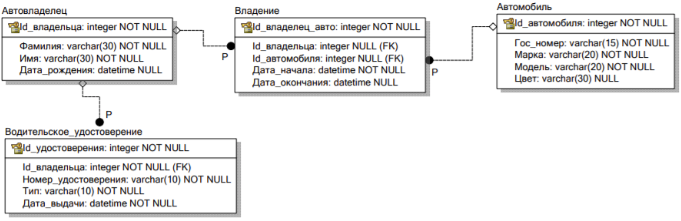

Практическое занятие №3.1. Django Web framework. Запросы и их выполнение.¶
Практическое задание 1:¶
Напишите запрос на создание 6-7 новых автовладельцев и 5-6 автомобилей, каждому автовладельцу назначьте удостоверение и от 1 до 3 автомобилей. Задание можете выполнить либо в интерактивном режиме интерпретатора, либо в отдельном python-файле. Результатом должны стать запросы и отображение созданных объектов.
Если вы добавляете автомобили владельцу через метод .add(), не забудьте заполнить также ассоциативную сущность “владение”
Практическое задание 2:¶
По созданным в пр.1 данным написать следующие запросы на фильтрацию:
- Где это необходимо, добавьте related_name к полям модели
- Выведете все машины марки “Toyota” (или любой другой марки, которая у вас есть)
- Найти всех водителей с именем “Олег” (или любым другим именем на ваше усмотрение)
- Взяв любого случайного владельца получить его id, и по этому id получить экземпляр удостоверения в виде объекта модели (можно в 2 запроса)
- Вывести всех владельцев красных машин (или любого другого цвета, который у вас присутствует)
- Найти всех владельцев, чей год владения машиной начинается с 2010 (или любой другой год, который присутствует у вас в базе)
Практическое задание 3:¶
Необходимо реализовать следующие запросы c применением описанных методов:
- Вывод даты выдачи самого старшего водительского удостоверения
- Укажите самую позднюю дату владения машиной, имеющую какую-то из существующих моделей в вашей базе
- Выведите количество машин для каждого водителя
- Подсчитайте количество машин каждой марки
- Отсортируйте всех автовладельцев по дате выдачи удостоверения (Примечание: чтобы не выводить несколько раз одни и те же записи воспользуйтесь методом .distinct()
Решение¶
Я создал классы согласно схеме БД: 
Потом применяем миграции и БД готова к запросам.
Приложение здесь: autoapp
Код всех заданий здесь: pr1.py
Вот вывод:
Создан: Автовладелец Иванов Олег, дата рождения: 2000-01-15
Создан: Автовладелец Петров Сергей, дата рождения: 2001-02-16
Создан: Автовладелец Сидоров Алексей, дата рождения: 2002-03-17
Создан: Автовладелец Кузнецов Олег, дата рождения: 2003-04-18
Создан: Автовладелец Смирнов Дмитрий, дата рождения: 2004-05-19
Создан: Автовладелец Васильев Игорь, дата рождения: 2005-06-20
Создан: Автомобиль Toyota Camry (А000ВС00РУС) Красный
Создан: Автомобиль Toyota Corolla (А001ВС01РУС) Синий
Создан: Автомобиль Honda Civic (А002ВС02РУС) Черный
Создан: Автомобиль BMW X5 (А003ВС03РУС) Белый
Создан: Автомобиль Toyota RAV4 (А004ВС04РУС) Красный
Создан: Автомобиль Kia Rio (А005ВС05РУС) Серый
Создано: Удостоверение AB000001, тип: B, дата выдачи: 2010-01-15, владелец: Автовладелец Иванов Олег, дата рождения: 2000-01-15
Создано: Удостоверение AB000002, тип: BC, дата выдачи: 2011-01-15, владелец: Автовладелец Петров Сергей, дата рождения: 2001-02-16
Создано: Удостоверение AB000003, тип: B, дата выдачи: 2012-01-15, владелец: Автовладелец Сидоров Алексей, дата рождения: 2002-03-17
Создано: Удостоверение AB000004, тип: BC, дата выдачи: 2013-01-15, владелец: Автовладелец Кузнецов Олег, дата рождения: 2003-04-18
Создано: Удостоверение AB000005, тип: B, дата выдачи: 2014-01-15, владелец: Автовладелец Смирнов Дмитрий, дата рождения: 2004-05-19
Создано: Удостоверение AB000006, тип: BC, дата выдачи: 2015-01-15, владелец: Автовладелец Васильев Игорь, дата рождения: 2005-06-20
Создано: Автовладелец Иванов Олег, дата рождения: 2000-01-15 владеет Автомобиль Toyota Camry (А000ВС00РУС) Красный с 2015-03-10 по 2020-05-15
Создано: Автовладелец Иванов Олег, дата рождения: 2000-01-15 владеет Автомобиль Toyota Corolla (А001ВС01РУС) Синий с 2015-03-10 по 2020-05-15
Создано: Автовладелец Петров Сергей, дата рождения: 2001-02-16 владеет Автомобиль Honda Civic (А002ВС02РУС) Черный с 2018-07-22 по None
Создано: Автовладелец Сидоров Алексей, дата рождения: 2002-03-17 владеет Автомобиль BMW X5 (А003ВС03РУС) Белый с 2012-01-05 по 2019-11-30
Создано: Автовладелец Сидоров Алексей, дата рождения: 2002-03-17 владеет Автомобиль Toyota RAV4 (А004ВС04РУС) Красный с 2012-01-05 по 2019-11-30
Создано: Автовладелец Сидоров Алексей, дата рождения: 2002-03-17 владеет Автомобиль Kia Rio (А005ВС05РУС) Серый с 2012-01-05 по 2019-11-30
Создано: Автовладелец Кузнецов Олег, дата рождения: 2003-04-18 владеет Автомобиль Toyota Camry (А000ВС00РУС) Красный с 2020-06-01 по None
Создано: Автовладелец Смирнов Дмитрий, дата рождения: 2004-05-19 владеет Автомобиль Toyota Corolla (А001ВС01РУС) Синий с 2017-09-14 по 2021-02-28
Создано: Автовладелец Смирнов Дмитрий, дата рождения: 2004-05-19 владеет Автомобиль Honda Civic (А002ВС02РУС) Черный с 2017-09-14 по 2021-02-28
Создано: Автовладелец Васильев Игорь, дата рождения: 2005-06-20 владеет Автомобиль Toyota RAV4 (А004ВС04РУС) Красный с 2019-04-03 по None
Владелец: Автовладелец Иванов Олег, дата рождения: 2000-01-15
Его удостоверения: [<License: Удостоверение AB000001, тип: B, дата выдачи: 2010-01-15, владелец: Автовладелец Иванов Олег, дата рождения: 2000-01-15>]
Его записи о владении: [<Ownership: Автовладелец Иванов Олег, дата рождения: 2000-01-15 владеет Автомобиль Toyota Camry (А000ВС00РУС) Красный с 2015-03-10 по 2020-05-15>, <Ownership: Автовладелец Иванов Олег, дата рождения: 2000-01-15 владеет Автомобиль Toyota Corolla (А001ВС01РУС) Синий с 2015-03-10 по 2020-05-15>]
Его автомобили: ['Автомобиль Toyota Camry (А000ВС00РУС) Красный', 'Автомобиль Toyota Corolla (А001ВС01РУС) Синий']
Все автомобили Toyota:
- Автомобиль Toyota Camry (А000ВС00РУС) Красный
- Автомобиль Toyota Corolla (А001ВС01РУС) Синий
- Автомобиль Toyota RAV4 (А004ВС04РУС) Красный
Все владельцы по имени Олег:
- Автовладелец Иванов Олег, дата рождения: 2000-01-15
- Автовладелец Кузнецов Олег, дата рождения: 2003-04-18
Удостоверение случайного владельца:
Автовладелец Петров Сергей, дата рождения: 2001-02-16 Удостоверение AB000002, тип: BC, дата выдачи: 2011-01-15, владелец: Автовладелец Петров Сергей, дата рождения: 2001-02-16
Владельцы красных машин:
- Автовладелец Иванов Олег, дата рождения: 2000-01-15: ['Автомобиль Toyota Camry (А000ВС00РУС) Красный']
- Автовладелец Сидоров Алексей, дата рождения: 2002-03-17: ['Автомобиль Toyota RAV4 (А004ВС04РУС) Красный']
- Автовладелец Кузнецов Олег, дата рождения: 2003-04-18: ['Автомобиль Toyota Camry (А000ВС00РУС) Красный']
- Автовладелец Васильев Игорь, дата рождения: 2005-06-20: ['Автомобиль Toyota RAV4 (А004ВС04РУС) Красный']
Владения, начатые с 2015 года:
- Автовладелец Иванов Олег, дата рождения: 2000-01-15 владеет Автомобиль Toyota Camry (А000ВС00РУС) Красный с 2015-03-10 по 2020-05-15
- Автовладелец Иванов Олег, дата рождения: 2000-01-15 владеет Автомобиль Toyota Corolla (А001ВС01РУС) Синий с 2015-03-10 по 2020-05-15
- Автовладелец Петров Сергей, дата рождения: 2001-02-16 владеет Автомобиль Honda Civic (А002ВС02РУС) Черный с 2018-07-22 по None
- Автовладелец Кузнецов Олег, дата рождения: 2003-04-18 владеет Автомобиль Toyota Camry (А000ВС00РУС) Красный с 2020-06-01 по None
- Автовладелец Смирнов Дмитрий, дата рождения: 2004-05-19 владеет Автомобиль Toyota Corolla (А001ВС01РУС) Синий с 2017-09-14 по 2021-02-28
- Автовладелец Смирнов Дмитрий, дата рождения: 2004-05-19 владеет Автомобиль Honda Civic (А002ВС02РУС) Черный с 2017-09-14 по 2021-02-28
- Автовладелец Васильев Игорь, дата рождения: 2005-06-20 владеет Автомобиль Toyota RAV4 (А004ВС04РУС) Красный с 2019-04-03 по None
Дата выдачи самого старшего водительского удостоверения: 2010-01-15
Самая поздняя дата владения машиной: 2020-06-01
Количество машин для каждого водителя:
- Алексей Сидоров: 3 машин
- Олег Иванов: 2 машин
- Дмитрий Смирнов: 2 машин
- Сергей Петров: 1 машин
- Олег Кузнецов: 1 машин
- Игорь Васильев: 1 машин
Количество машин каждой марки:
- Марка "Toyota": 3 машин
- Марка "Kia": 1 машин
- Марка "Honda": 1 машин
- Марка "BMW": 1 машин
Автовладельцы, отсортированные по дате выдачи удостоверения:
1. Олег Иванов: удостоверение от 2010-01-15
2. Сергей Петров: удостоверение от 2011-01-15
3. Алексей Сидоров: удостоверение от 2012-01-15
4. Олег Кузнецов: удостоверение от 2013-01-15
5. Дмитрий Смирнов: удостоверение от 2014-01-15
6. Игорь Васильев: удостоверение от 2015-01-15
Process finished with exit code 0